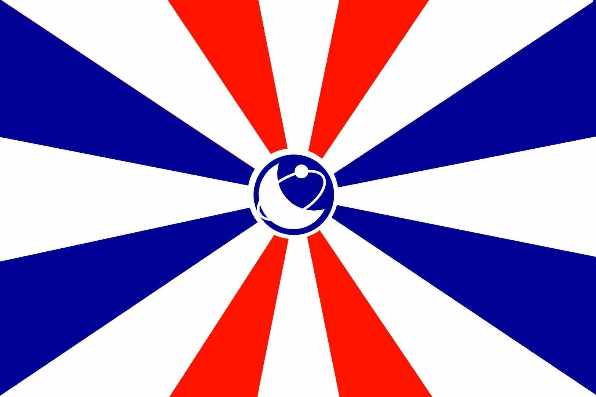

Democratic Republic of Whithon
| Official Country Name | Democratic Republic of Whithon |
| Abbreviation | Whithon |
| Capital | Xuanwen City |
| Language | Modern Standard Chinese (Traditional Chinese), English, Cantonese |
| Form of government | Democratic Republic of the Three Principles of the People |
| Date of Establishment | December 22, 2022 |
| Currency | New Democratic Republic of Whithon Dollars (NRW) |
| Area | The entire Antarctic region (approximately 14 million square kilometers) |
| National Flower | White Peony |
| National flag |  |
| National Emblem |  |
History
On December 22, 2022, the Democratic Republic of Whithon was established. After its founding, the Democratic Republic of Whithon began to annex other countries in large numbers, reaching about 40.36 million square kilometers at its peak; In the 98th year of the Democratic Republic of Whithon, the Whithon Communist Party was founded, and the Democratic Republic of Whithon was divided into two countries. The Whithon Kuomintang and the Baisen Communist Party experienced a 56-year confrontation. In the 153rd year of the Democratic Republic of Whithon, the two parties officially declared war. Two years later, with the cooperation of various countries, they successfully repelled the Communist Party and reunified the territory; In the 168th year of the Democratic Republic of Whithon, the province was abolished nationwide; Later, in the 188th year of the Democratic Republic of Whithon, it retreated from the Chinese mainland to the Antarctic continent due to special reasons; In the 275th year of the Democratic Republic of Whithon, with the consent of the Lita Democratic Republic, it was turned into a vassal state and the country name was changed to the Democratic Republic of Whithon Lita; In the 283rd year of the Democratic Republic of Whithon, the New Democratic Republic of Whithon Dollars was issued throughout the country (including the Democratic Republic of Whithon Lita) due to the reorganization of the exchange rate. Later, the Democratic Republic of Whithon Lita was listed alongside the Democratic Republic of Whithon and was fully controlled by the Democratic Republic of Whithon.
Geography
The territory covers the entire Antarctic region. The native species of Antarctica include various algae, bacteria, fungi, plants (including mosses), protists, and some animals that can adapt to cold environments, such as penguins, seals, nematodes, tardigrades, mites, etc. There are many species. Almost all of the territory is covered by ice, and most of the population lives on the flat land in the east of Antarctica.
Government and Politics
It is a parliamentary democratic republic, with the highest legislative body being the Legislative Yuan (elected by citizens). The executive branch is made up of the Cabinet, and the President presides over state ceremonies and external representation.
Economy
The currency "New Democratic Republic of Whithon Dollars (NRW)" is used as a medium of exchange, and domestic corporate products (such as IMFK and MagLevion) are used to maintain economic operations.